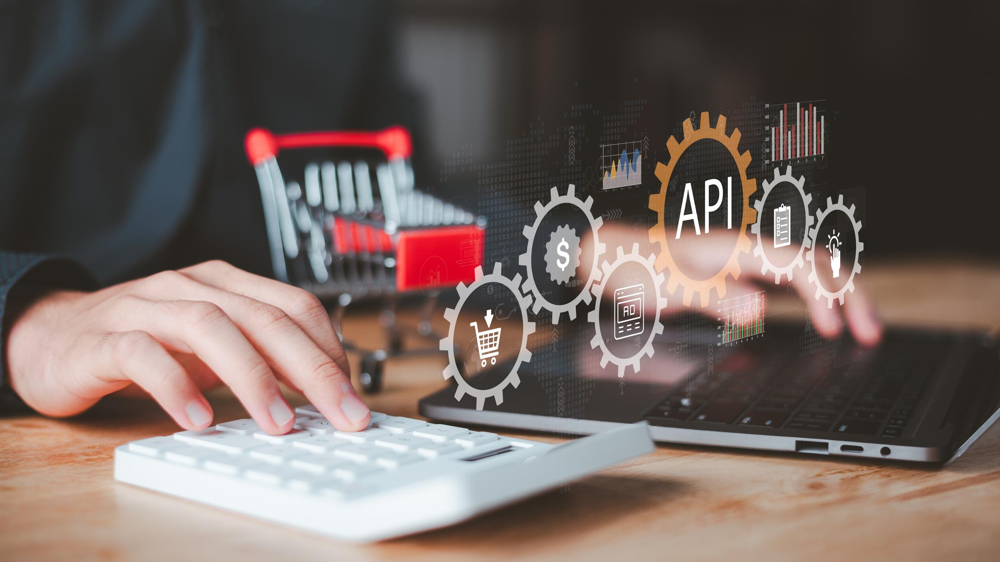
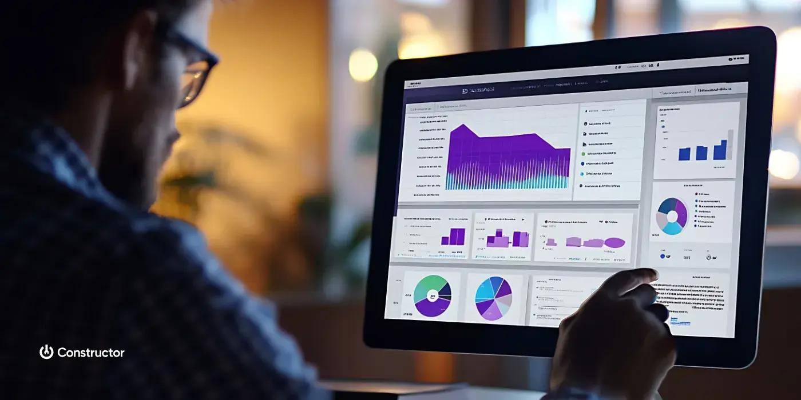
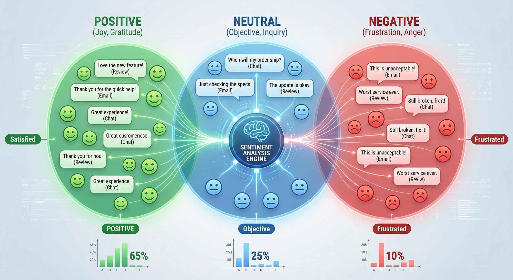
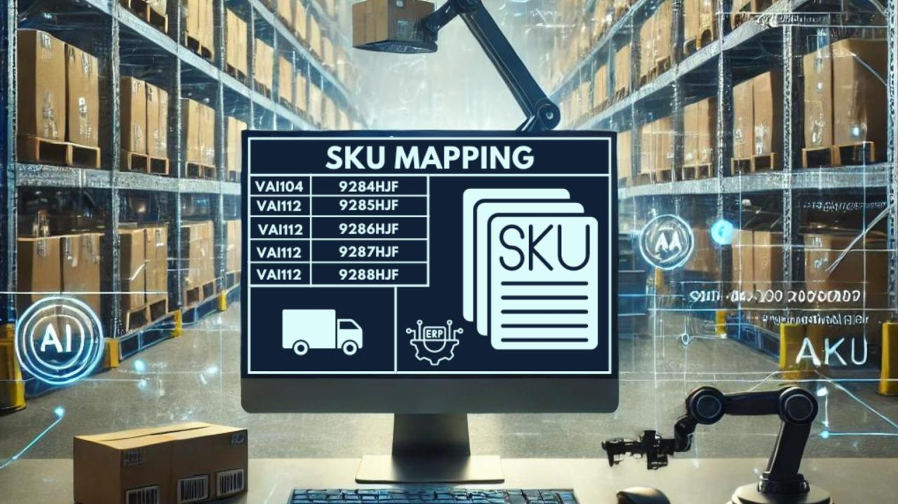

ReturnSense by SKU Causality Engine Group uses Bayesian AI, NLP, and GAN-powered diagnostics to identify the exact root cause of every product return giving UK e-commerce brands actionable "Monday Morning" fixes that protect margins in real-time.
SKU Causality Engine transforms fragmented return reason codes into granular, revenue-prioritised action intelligence through a four-stage AI diagnostic lifecycle.

Plug-and-play API connects to Shopify, Magento, and Loop Returns in under 30 minutes. No changes to your existing stack required.

Bayesian networks and deep learning separate overlapping return triggers — sizing defect, batch fault, description mismatch — with 90%+ accuracy.
The "What-If" module forecasts exact £-value savings per fix. Every Monday, ops teams receive a ranked action list tied to real margin recovery.
Persistent issue tracking across batches eliminates recurring defects. GAN-powered synthetic profiles predict new collection risks before they ship.
ReturnSense combines causal AI diagnostics, NLP sentiment analysis, and GAN-based predictive modelling into one scalable SaaS platform built exclusively for UK e-commerce.
Identifies the specific "DNA" of why a SKU fails fabric quality vs. sizing inconsistency vs. digital description error rather than relying on vague customer codes.

Digests free-text customer feedback, social mentions, and support tickets to capture the "tone" of the return identifying if a quality issue is an isolated defect or a growing brand-perception risk.
Generates synthetic failure profiles for new collections to solve the "cold start" problem predicting return risks before a product even ships, with no historical data required.
SKU Causality Engine Group (ReturnSense) was born from a critical operational gap in the UK's £27 billion e-commerce returns problem: brands can track what is being returned, but have zero diagnostic tools to understand why specific SKUs fail. The result is repeated inventory errors, wasted logistics spend, and eroding margins not because the products are poor, but because organisations lack the systems to isolate and fix the true root causes.
Our platform transforms fragmented return reason codes from a reactive cost into a governed, repeatable diagnostic intelligence system. We don't just count returns we model the causal "Failure Fingerprint" of every SKU across seasons and batches, creating a permanent operational asset that bridges the gap between the warehouse and the design team.
Founded by Pendlimadugu Sree Pravallika an MSc Project Management graduate (Distinction) from the University of the West of Scotland and former Quality Associate at Amazon ReturnSense encodes Amazon-standard root-cause analysis logic into a SaaS platform built specifically for the 12,000+ UK mid-market fashion and footwear brands currently haemorrhaging margins on avoidable returns.
Sree brings a rare combination of high-standard operational experience and academic excellence to ReturnSense. With a Distinction in MSc Project Management from the University of the West of Scotland and extensive experience as a Quality Associate at Amazon, she specialises in root-cause analysis, incident management, and operational efficiency at global scale.
Her hands-on experience identifying manufacturing and logistical defects across Amazon's driver support operations directly informed the SKU Causality Engine's diagnostic logic. She personally validated the platform's "Failure Fingerprinting" architecture, ensuring it mirrors the same Amazon-grade quality standards used by global logistics leaders.
SKU Causality Engine Group is building its core team through a phased, revenue-linked strategy: a Data Scientist (Computer Vision/NLP) to further refine the GAN-based synthetic data engine; an Operations Implementation Lead to manage Pilot-to-Contract conversion; and a Compliance Officer to oversee international data-sharing protocol expansion.
All hires are UK-based, aligned with the UK government's Pro-Innovation AI framework. By Year 5, the platform targets 38 UK jobs across technical development, operations, and global commercial functions creating a world-class returns intelligence capability from the UK.
ReturnSense is a cloud-native, API-first SaaS platform built on a modular architecture React dashboards, Shopify/Magento integration layer, proprietary Bayesian causal data model, and UK GDPR-compliant cloud infrastructure designed to serve UK mid-market retailers without requiring in-house data science teams.

Machine learning models that identify and encode the causal "DNA" of why specific SKUs fail sizing inconsistency, batch defect, digital description mismatch and store them as persistent, trackable failure profiles across seasons.
Automatically separates multiple overlapping return triggers using advanced Bayesian networks and deep learning. Moves beyond correlation (how many returns) to actual causality (exactly why this batch is failing).
Enables real-time simulations to predict exactly how return rates and profitability would change if specific product issues are corrected before implementation tied to a precise pound-value (£) recovery figure.
Solves the "cold start" problem for new collections by generating synthetic failure profiles based on historical category metadata predicting return risks for new SKUs before they even ship.
A federated NLP architecture that processes free-text customer comments, social mentions, and support tickets to continuously improve diagnostic models without sharing sensitive customer PII.
A plug-and-play SaaS layer that connects directly to Shopify, Magento, and Loop Returns with sub-15-minute processing latency and zero technical debt for the client's existing stack.
The UK presents a structurally underserved market for ReturnSense. With 12,000+ mid-market fashion brands facing the world's highest return rates and no existing solution offering SKU-level causal diagnostics, the demand for returns intelligence is both urgent and commercially validated.
Three subscription tiers designed to scale alongside your brand's order volume and complexity from basic diagnostic access to full What-If simulation and dedicated ERP integration. All plans include the zero-friction API layer, weekly action lists, and UK GDPR-compliant data architecture. No in-house data scientists required.
For emerging UK boutique brands beginning their returns intelligence journey structured causal diagnostics without complexity.
For growth brands requiring advanced Failure Fingerprinting, Loop Returns integration, and sector-specific diagnostic modules.
For scaled brands requiring custom ERP/WMS integration, unlimited orders, What-If simulation, and 24/7 dedicated support.
As founder and CEO, Sree personally leads every pilot onboarding and is available to walk through the platform, answer technical questions, or explore whether ReturnSense is the right fit for your brand. No sales team. No automated sequences. Just a direct conversation with the person who built it.
London, United Kingdom · UK-first platform, serving brands nationwide and internationally from Year 3.
skucausalityenginegroupuk@outlook.com · Sree personally responds to all demo requests within 24 hours.
+44 7572 316041 · Available for calls Monday–Friday, 9am–6pm GMT.
ReturnSense connects to your existing Shopify, Magento, or Loop Returns ecosystem with a plug-and-play API that requires no changes to your existing logistics stack. No IT project. No technical debt. No disruption to current operations.
Once connected, the cloud-based adaptive engine processes historical data to provide immediate "Day 1" insights ensuring a rapid time-to-value for busy operational teams managing hundreds of SKUs simultaneously.
The Bayesian causal inference engine processes batch data, production timestamps, fabric specs, and free-text customer feedback to determine exactly why specific SKUs are failing separating a sizing error from a batch defect from a description mismatch in real time.
Unlike standard analytics that show return volume, ReturnSense provides causality: "SKU X has a 20% return rate specifically because the shoulder width is 1.5cm off-spec in the Q2 manufacturing batch." That level of precision is what turns a return cost into a solvable operational problem.
The "What-If" simulation module enables real-time revenue recovery forecasting: see exactly how many pounds your brand would save by updating a size guide, correcting a product photo, or pulling a defective batch before making any operational change.
Every Monday, operations managers receive a ranked "Top 5 SKUs to Fix" list tied to specific £-value recovery figures. CFOs can approve inventory modifications with data-backed ROI converting return management from a massive loss-leader into an automated profit-recovery engine.
The GAN Synthetic Data Pipeline solves the "cold start" problem: generating synthetic failure profiles for new SKUs based on historical category metadata predicting return risks before a single item ships. This is one of ReturnSense's most significant competitive differentiators.
Competitors like Loop Returns and ZigZag have no data for new collections. ReturnSense predicts it. This proprietary data moat grows with every deployment generating a self-reinforcing competitive advantage that becomes harder to replicate the longer we operate.
Common questions from UK brands, logistics managers, and 3PL partners considering ReturnSense for their returns intelligence strategy.
As founder and CEO, Sree personally leads every pilot onboarding and is available to walk through the platform, answer technical questions, or explore whether ReturnSense is the right fit for your team. No sales team. No automated sequences. Just a direct conversation with the person who built it drawing on Amazon-grade quality standards and MSc-level project management expertise.